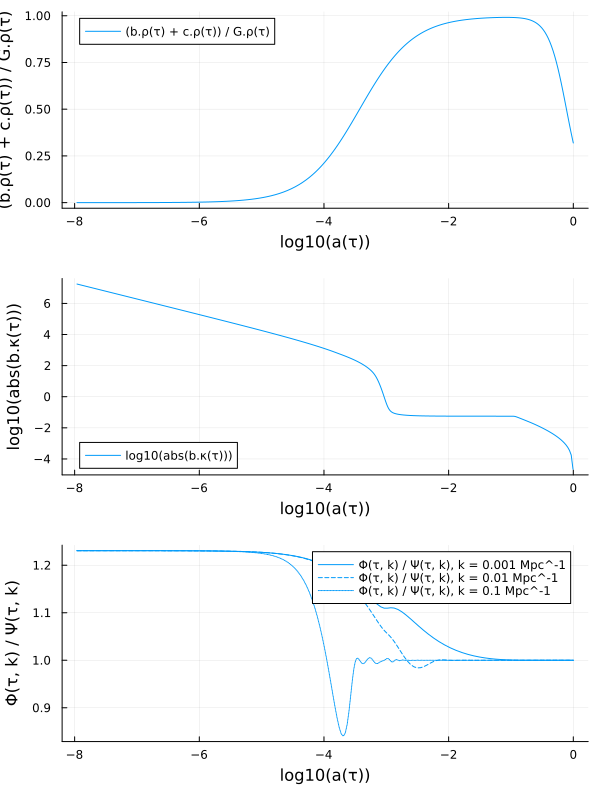

Solving models
First create a symbolic cosmological model:
using SymBoltz
M = ΛCDM()Creating the problem
Once the symbolic cosmological model M has been constructed, it can be turned into a numerical problem: For example:
pars = parameters_Planck18(M)
prob = CosmologyProblem(M, pars; jac = true, sparse = true)Cosmology problem for model ΛCDM
Stages:
Background: 5 unknowns, 0 splines, dense Jacobian
Perturbations: 82 unknowns, 5 splines, 93.9 % sparse Jacobian
Parameters & initial conditions:
h = 0.6736
h₊m_eV = 0.02
h₊N = 3.0
I₊ln_As1e10 = 3.0440461338325417
I₊ns = 0.965
γ₊T₀ = 2.7255
b₊Ω₀ = 0.04936780993111075
ν₊Neff = 2.99
c₊Ω₀ = 0.26447041034523616
b₊YHe = 0.2454The keyword arguments generate a analytical and sparse Jacobian matrix, so solving large perturbation systems is efficient.
SymBoltz.CosmologyProblem — Type
CosmologyProblem(
M::System, pars::Dict, shoot_pars = Dict(), shoot_conditions = [];
ivspan = (1e-6, 100.0), terminate_today = true,
bg = true, pt = true, spline = true, debug = false, fully_determined = true, jac = true, sparse = true,
bgopts = (), ptopts = (), kwargs...
)Create a numerical cosmological problem from the model M with parameters pars. Optionally, the shooting method determines the parameters shoot_pars (mapped to initial guesses) such that the equations shoot_conditions are satisfied at the final time.
If bg and pt, the model is split into the background and perturbations stages.
If spline is a Bool, it decides whether all background unknowns in the perturbations system are replaced by splines. If spline is a Vector, it rather decides which (unknown and observed) variables are splined.
If jac, analytic functions are generated for the ODE Jacobians; otherwise it is computed with forward-mode automatic differentiation by default. If sparse, the perturbations ODE uses a sparse Jacobian matrix that is usually more efficient; otherwise a dense matrix is used.
Updating the parameters
Constructing a CosmologyProblem is an expensive operation that compiles all the symbolics down to numerics. It is not necessary to repeat this just to update parameter values. To do so, use the function parameter_updater that returns a function that quickly creates new problems with updated parameter values:
probmaker = parameter_updater(prob, [M.g.h, M.c.Ω₀]) # fast factory function
prob = probmaker([0.70, 0.27]) # create updated problemCosmology problem for model ΛCDM
Stages:
Background: 5 unknowns, 0 splines, dense Jacobian
Perturbations: 82 unknowns, 5 splines, 93.9 % sparse Jacobian
Parameters & initial conditions:
h = 0.7
h₊m_eV = 0.02
h₊N = 3.0
I₊ln_As1e10 = 3.0440461338325417
I₊ns = 0.965
γ₊T₀ = 2.7255
b₊Ω₀ = 0.04936780993111075
ν₊Neff = 2.99
c₊Ω₀ = 0.27
b₊YHe = 0.2454SymBoltz.parameter_updater — Function
parameter_updater(prob::CosmologyProblem, idxs; kwargs...)Create and return a function that updates the symbolic parameters idxs of the cosmological problem prob. The returned function is called with numerical values (in the same order as idxs) and returns a new problem with the updated parameters.
Solving the problem
The (updated) problem can now be solved for some wavenumbers:
using Unitful, UnitfulAstro
ks = 10 .^ range(-5, +1, length=100) / u"Mpc"
sol = solve(prob, ks)Cosmology solution for model ΛCDM
Stages:
Background: return code Terminated; solved with Rodas5P; 792 points
Perturbations: return codes Success; solved with Rodas5P; 137-4566 points; x100 k ∈ [0.042827494000000015, 42827.49400000001] H₀/c (interpolation in-between)CommonSolve.solve — Method
CommonSolve.solve(args...; kwargs...)Solves an equation or other mathematical problem using the algorithm specified in the arguments. Generally, the interface is:
CommonSolve.solve(prob::ProblemType, alg::SolverType; kwargs...)::SolutionTypewhere the keyword arguments are uniform across all choices of algorithms.
By default, solve defaults to using solve! on the iterator form, i.e.:
solve(args...; kwargs...) = solve!(init(args...; kwargs...))solve(
prob::CosmologyProblem, ks::Union{Nothing, AbstractArray} = nothing;
bgopts = (alg = bgalg(prob), reltol = 1e-7, abstol = 1e-7), bgextraopts = (),
ptopts = (alg = ptalg(prob), reltol = 1e-5, abstol = 1e-5), ptivini = -Inf, ptextraopts = (),
shootopts = (alg = shootalg(prob), abstol = 1e-5),
thread = true, verbose = false, kwargs...
)Solve the cosmological problem prob up to the perturbative level with wavenumbers ks (or only to the background level if it is empty). The options bgopts and ptopts are passed to the background and perturbations ODE solve() calls, and shootopts to the shooting method nonlinear solve(). If threads, integration over independent perturbation modes are parallellized.
Accessing the solution
The returned solution sol can be conveniently accessed to obtain any variable y of the model M:
sol(y, τ)returns the background variable(s) $y(τ)$ as a function of conformal time(s) $τ$. It interpolates between time points using the ODE solver's custom-tailored interpolator.sol(y, τ, k)returns the perturbation variable(s) $y(τ,k)$ as a function of the wavenumber(s) $k$ and conformal time(s) $τ$. It also interpolates linearly between the logarithms of the wavenumbers passed tosolve.
Note that y can be any symbolic variables in the model M, and even expressions thereof. Unknown variables are part of the state vector integrated by the ODE solver, and are returned directly from its solution. Observed variables or expressions are functions of the unknowns, and are automatically calculated from the equations that define them in the symbolic model. For example:
τs = sol[M.τ] # get time points used in the background solution
ks = [1e-3, 1e-2, 1e-1, 1e0] / u"Mpc" # wavenumbers
as = sol(M.g.a, τs) # scale factors
Ωms = sol((M.b.ρ + M.c.ρ) / M.G.ρ, τs) # matter-to-total density ratios
κs = sol(M.b.κ, τs) # optical depths
Φs = sol(M.g.Φ, τs, ks) # metric potentials
Φs_over_Ψs = sol(M.g.Φ / M.g.Ψ, τs, ks) # ratio between metric potentialsPlotting the solution
SymBoltz.jl includes plot recipes for easily visualizing the solution. It works similarly to the solution accessing: call plot(sol, [wavenumber(s),] x_expr, y_expr) to plot y_expr as a function of x_expr. For example, to plot some of the same quantities that we obtained above:
using Plots
p1 = plot(sol, log10(M.g.a), (M.b.ρ + M.c.ρ) / M.G.ρ)
p2 = plot(sol, log10(M.g.a), log10(abs(M.b.κ)))
p3 = plot(sol, log10(M.g.a), M.g.Φ / M.g.Ψ, ks[1:3]) # exclude last k, where Φ and Ψ cross 0
plot(p1, p2, p3, layout=(3, 1), size=(600, 800))
More examples are shown on the models page.
Shooting method
Some problems require tuning parameters or initial conditions to satisfy constraints at a later time. This is handled by the shooting method, which uses a rootfinder to repeatedly solve the background for different parameters to find the values that satisfies the constraints. As a trivial example, we can construct a model where the continuity equation for the cosmological constant is integrated numerically and not analytically:
g = SymBoltz.metric()
Λ = SymBoltz.cosmological_constant(g; analytical = false)
M = ΛCDM(; g, Λ)
equations(background(M.Λ))\[ \begin{align*} \frac{\mathrm{d} ~ \rho\left( \tau \right)}{\mathrm{d}\tau} &= - 3 ~ \mathscr{H}\left( \tau \right) ~ \left( P\left( \tau \right) + \rho\left( \tau \right) \right) \\ \Omega\left( \tau \right) &= 8.3776 ~ \rho\left( \tau \right) \\ w\left( \tau \right) &= -1 \\ P\left( \tau \right) &= w\left( \tau \right) ~ \rho\left( \tau \right) \\ \mathtt{c_s^2}\left( \tau \right) &= w\left( \tau \right) \end{align*} \]
We specify to shoot for $\rho_\Lambda(\tau_\text{ini})$ and give an initial guess that is used as the starting point in Newton's method. We also specify that the constraint $H/H₀ = 1$ (in code units) must hold today:
shoot = Dict(M.Λ.ρ => 0.0)
conditions = [M.g.H ~ 1]
prob = CosmologyProblem(M, pars, shoot, conditions)
sol = solve(prob; verbose = true)Shooting: Λ₊ρ(τ) = 0.0 -> -1 + H(τ) = -0.43845198779505246
Shooting: Λ₊ρ(τ) = 0.05877874780512821 -> -1 + H(τ) = -0.10124538603532651
Shooting: Λ₊ρ(τ) = 0.08050214627124379 -> -1 + H(τ) = -0.005138515399323196
Shooting: Λ₊ρ(τ) = 0.08172257290050935 -> -1 + H(τ) = -1.3202205889739638e-5
Shooting: Λ₊ρ(τ) = 0.08172572465341824 -> -1 + H(τ) = -8.702816245431677e-11
Shooting: Λ₊ρ(τ) = 0.08172572465341824 -> -1 + H(τ) = -8.702816245431677e-11
Shooting: Λ₊ρ(τ) = 0.08172572465341824 -> -1 + H(τ) = -8.702816245431677e-11You can specify any number of shooting variables and conditions, but they must be equal in number to form a well-defined rootfinding problem. When there is only one shooting variable, we can also use bracketing rootfinders instead of Newton's method. To do this, replace the scalar guess with an interval:
shoot = Dict(M.Λ.ρ => (0.0, 0.5))
prob = CosmologyProblem(M, pars, shoot, conditions)
sol = solve(prob; verbose = true)Shooting: Λ₊ρ(τ) = 0.0 -> -1 + H(τ) = -0.43845198779505246
Shooting: Λ₊ρ(τ) = 0.5 -> -1 + H(τ) = 1.1222927165680323
Shooting: Λ₊ρ(τ) = 0.25 -> -1 + H(τ) = 0.5523309158824747
Shooting: Λ₊ρ(τ) = 0.11063270928667453 -> -1 + H(τ) = 0.11452706920439248
Shooting: Λ₊ρ(τ) = 0.08321137505892137 -> -1 + H(τ) = 0.006203834001123676
Shooting: Λ₊ρ(τ) = 0.08167000467420955 -> -1 + H(τ) = -0.00023342663414505083
Shooting: Λ₊ρ(τ) = 0.08172589753318482 -> -1 + H(τ) = 7.240697827981535e-7
Shooting: Λ₊ρ(τ) = 0.08172572469436956 -> -1 + H(τ) = 8.450840027762752e-11
Shooting: Λ₊ρ(τ) = 0.08172572467419467 -> -1 + H(τ) = 0.0Solve background and perturbations directly
For lower-level control, you can solve the background and perturbations separately:
SymBoltz.solvebg — Function
solvebg(bgprob::ODEProblem[, vars, conditions]; alg = bgalg(bgprob), reltol = 1e-7, abstol = 1e-7, shootopts = (alg = shootalg(), reltol = 1e-3), verbose = false, build_initializeprob = Val{false}, kwargs...)Solve the background cosmology problem bgprob. If the background requires shooting, vars is a dictionary with variables to shoot for and their initial guesses, and conditions is and an array of equations that should hold at the final integration time (usually today).
SymBoltz.solvept — Function
solvept(ptprob::ODEProblem, bgsol::ODESolution, ks::AbstractArray, ptivini = -Inf; alg = ptalg(ptprob), reltol = 1e-5, abstol = 1e-5, output_func = (sol, i) -> sol, thread = true, verbose = false, kwargs...)Solve the perturbation cosmology problem ptprob with wavenumbers ks on top of the background solution bgsol (see solvebg). If thread and Julia is running with multiple threads, the solution of independent wavenumbers is parallellized. ptivini is a number or a function of $k$ that sets the initial time of integration for each perturbation mode, but is always clamped to the background timespan. The return value is a vector with one ODESolution per wavenumber, or its mapping through output_func if a custom transformation is passed.
solvept(ptprob::ODEProblem; alg = ptalg(ptprob), reltol = 1e-5, abstol = 1e-5, kwargs...)Solve the perturbation problem ptprob and return the solution. Its wavenumber and background spline must already be initialized, for example with setuppt.
Examples
# ...
prob = CosmologyProblem(M, pars)
bgsol = solvebg(prob.bg)
ptprobgen = SymBoltz.setuppt(prob.pt, bgsol)
k = 1.0
ptprob = ptprobgen(k)
ptsol = solvept(ptprob)Choice of ODE solver
In principle, models can be solved with any OrdinaryDiffEq.jl ODE solver. But most cosmological models have very stiff Einstein-Boltzmann equations that can only be solved by implicit solvers, while explicit solvers usually fail. For the stiff standard ΛCDM model, we find success with these solvers (from best to worst):
- Rosenbrock methods:
Rodas5P,Rodas4P,Rodas6P,Rodas5,Rodas4. - ESDIRK methods:
KenCarp4,KenCarp47,KenCarp5,Kvaerno5,TRBDF2. - BDF methods:
FBDF,QNDF. - FIRK methods:
AdaptiveRadau,RadauIIA5(currently only with dense Jacobians).
See the solver benchmarks for comparisons between them.